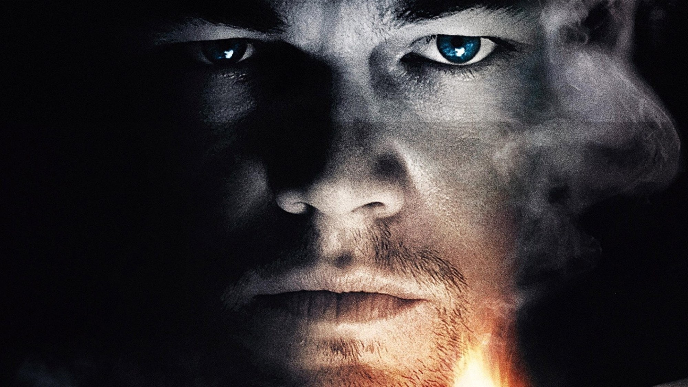
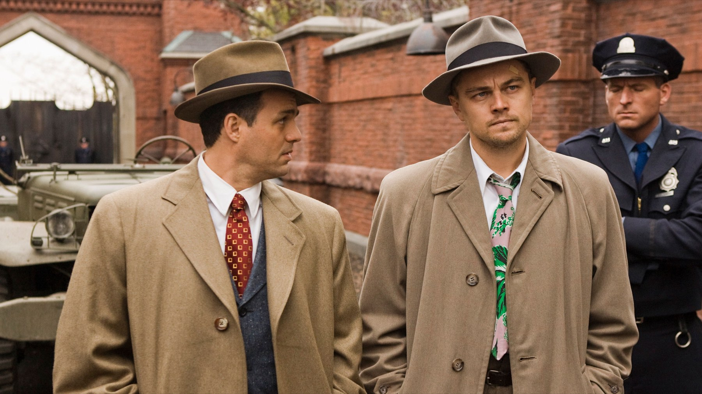
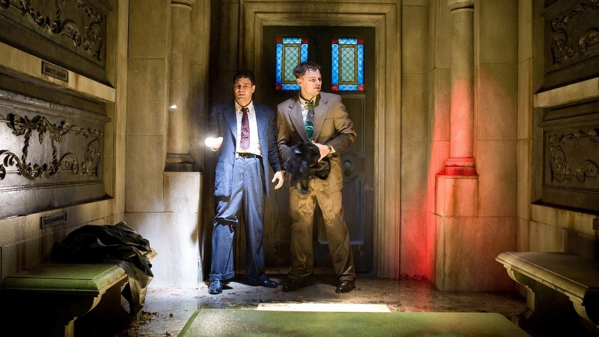
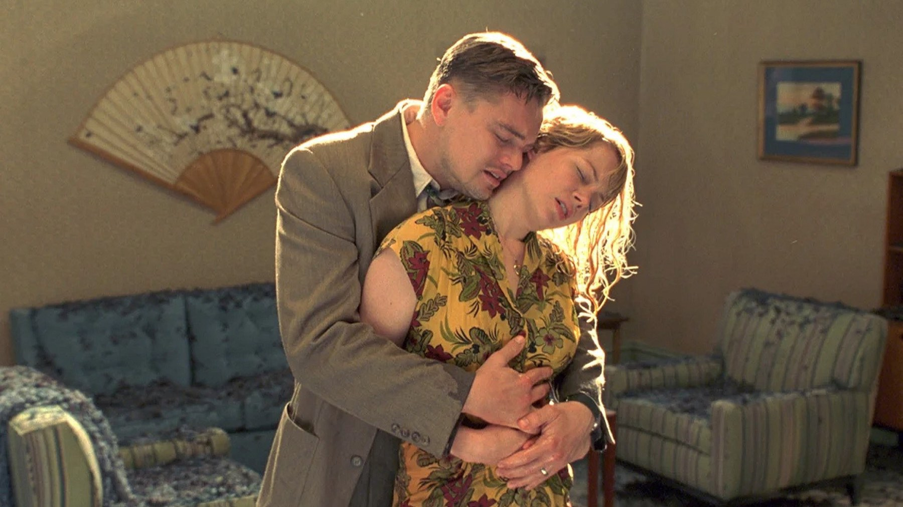

Shutter Island, il finale spiegato (spoiler)
La frase finale di DiCaprio ha due letture opposte, entrambe sostenute da chi il film l'ha costruito: ecco quale scegliamo noi
Un uomo seduto su una scala, un'ultima frase quasi sussurrata, poi la scelta di andare incontro a un destino che il film non ha bisogno di mostrare. Il finale di Shutter Island si regge su una domanda sola, e a sedici anni dall'uscita c'è ancora chi la rilegge in due modi opposti. Questa pagina rivela la verità su Teddy Daniels e l'ultima scena: se non avete visto il film, fermatevi qui e tornate dopo.
Cosa ci dice davvero il finale
Il personaggio di Leonardo DiCaprio, che per tutto il film si presenta come l'agente federale Teddy Daniels, è in realtà Andrew Laeddis, un paziente dell'ospedale psichiatrico dell'isola. Nell'ultima sequenza, secondo la ricostruzione di Wikipedia, Laeddis domanda al suo interlocutore se sia peggio campare da mostro oppure morire da uomo buono. Subito dopo accetta la lobotomia che lo aspetta. Tutto ciò che abbiamo visto prima, l'indagine, i sospetti, la cospirazione, è la storia che la sua mente ha costruito per non guardare in faccia ciò che ha fatto.

Due letture della stessa frase
La prima lettura arriva da James Gilligan, psichiatra della New York University che secondo Wikipedia ha fatto da consulente a Scorsese. Per lui Laeddis è troppo colpevole per continuare a vivere e accetta la lobotomia come una sorta di suicidio per interposta persona. In questa chiave la frase è lucida: l'uomo ha capito, e sceglie di morire da uomo buono.
La seconda lettura è quella di Dennis Lehane, l'autore del romanzo da cui il film è tratto. Sempre secondo Wikipedia, lo scrittore pensa a un lampo: un momento di sanità mentale in mezzo alle altre illusioni. Qui la frase è una scheggia di verità che dura il tempo di pronunciarla, e la lobotomia diventa un esito subìto più che cercato.
Perché noi stiamo con la prima
Le due letture non si escludono del tutto, ma per noi pesa di più la prima. Il film dedica ogni minuto a mostrarci un uomo che rifiuta di vedere; quando finalmente vede, la sua prima mossa è una battuta sul mostro e sull'uomo buono, cioè un giudizio su di sé. Un lampo casuale non costruirebbe una frase così calibrata. Quello che resta ambiguo è il peso del gesto: quanta lucidità ci sia in una scelta compiuta da chi è stato malato fino a un attimo prima. Ed è giusto che lo resti.

Il trucco di Scorsese, riletto alla seconda visione
Edoardo Becattini, su MYmovies, indica nella spirale la forma scelta da Scorsese per raccontare questa «gothic novel», e vede in DiCaprio l'ennesimo «man of violence» della sua filmografia. È una chiave utile per la seconda visione: sapendo la verità, ogni scena d'indagine diventa un tentativo del protagonista di allontanare il ricordo, e la regia fa lo stesso lavoro, sostenendo la messinscena del sospetto fino all'ultimo.
Le dichiarazioni di Scorsese o di DiCaprio sul significato dell'ultima frase non le abbiamo trovate nelle pagine che abbiamo letto, quindi non le citiamo: tra le interpretazioni autorevoli sono quelle di Gilligan e Lehane a reggere il confronto.
Il peso del cast intorno a Teddy
Secondo la scheda TMDB, accanto a DiCaprio ci sono Mark Ruffalo nel ruolo di Chuck Aule, Ben Kingsley in quello del dottor Cawley e Max von Sydow in quello del dottor Naehring, con Michelle Williams, Emily Mortimer e Patricia Clarkson nei ruoli femminili. La sceneggiatura è di Laeta Kalogridis dal romanzo di Dennis Lehane, la fotografia di Robert Richardson, la produzione di Paramount Pictures, Phoenix Pictures, Sikelia Productions e Appian Way. Rivisto con il finale in mente, il cast ha un compito preciso: Ruffalo, Kingsley e von Sydow devono rendere credibile l'ospedale, perché la storia di Teddy regge solo se gli interlocutori sembrano veri.
Le domande che il finale lascia aperte
Una volta chiarita la verità, restano tre domande che le fonti non sciolgono e che per questo trattiamo come nostre ipotesi. La prima: quanto di Teddy sa già, in ogni scena, di essere Laeddis? La seconda: l'ultima battuta è rivolta a chi gli sta accanto o a se stesso? La terza: se la lucidità è reale, la lobotomia è una condanna o una liberazione? Noi crediamo che il film non voglia una risposta univoca, ma che le sue immagini suggeriscano la più dolorosa: un uomo che ha capito e che, proprio per questo, non vuole più restare.
Un film che divide ma resiste
Girato tra il marzo e il luglio 2008 in Massachusetts, Shutter Island è uscito negli Stati Uniti il 19 febbraio 2010 con un budget di 80 milioni di dollari e secondo Wikipedia ha incassato circa 294,8 milioni nel mondo. Su Rotten Tomatoes, sempre secondo Wikipedia, ha il 69% di recensioni positive su 263 e su Metacritic 63 su 100: un consenso buono ma non unanime. Il pubblico, lo dimostra il voto TMDB di 8,2 su oltre 26 mila voti, lo ha amato più della critica.

Dove vederlo
In Italia, uscito il 5 marzo 2010 con Medusa (138 minuti, secondo MYmovies), Shutter Island è oggi disponibile, secondo TMDB a ottobre 2026, su Infinity Selection tramite Amazon Channel e a noleggio su Apple TV, TIMVISION e Amazon Video. Alla seconda visione guardate gli sguardi di DiCaprio nelle prime scene: dicono già tutto.
Il finale di Shutter Island non è un trucco ma una scelta: dopo un'ora e mezza di rifiuto, Teddy guarda la verità e decide chi vuole essere. Per noi è la lettura di Gilligan a reggere meglio, ma il film lascia a Lehane lo spazio per dubitare, ed è questo a renderlo ancora vivo.
Domande frequenti
Chi è davvero Teddy Daniels in Shutter Island?
Il personaggio di DiCaprio è Andrew Laeddis, paziente dell'ospedale psichiatrico, che si è costruito la figura dell'agente federale per non affrontare il proprio passato.
Cosa significa la frase finale sul mostro e sull'uomo buono?
Per lo psichiatra James Gilligan è la scelta di accettare la lobotomia perché troppo colpevole per vivere; per Dennis Lehane è un lampo di sanità mentale.
Dove si vede Shutter Island in Italia?
Secondo TMDB a ottobre 2026 è su Infinity Selection (Amazon Channel) e a noleggio su Apple TV, TIMVISION e Amazon Video.